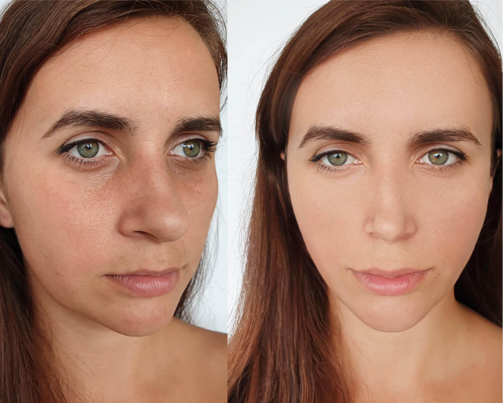
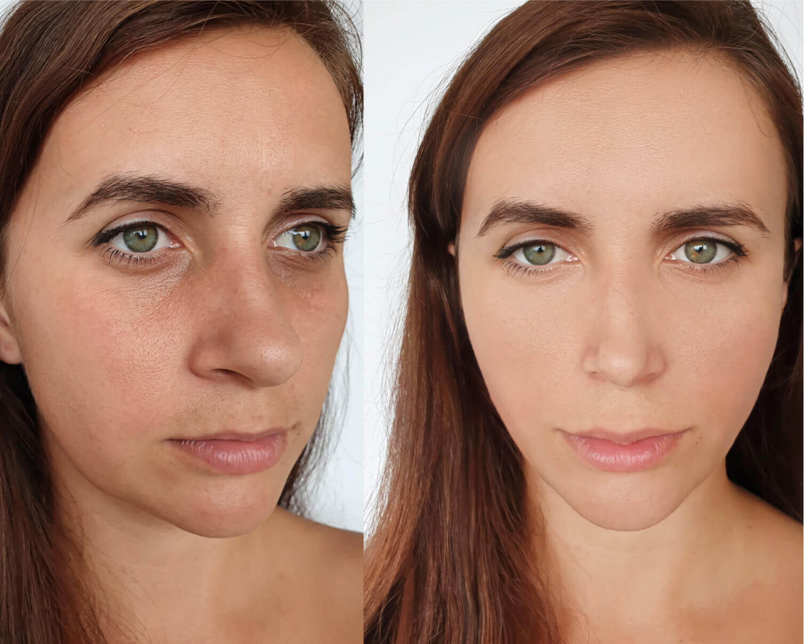

estás leyendo
562
Pensaban que una madre de 47 años era la novia de su hijo. Ella revela el secreto de su juventud.
Esta historia increíble se volvió rápidamente muy popular en Internet. Todo comenzó cuando Samuel David, de 22 años, le envió un mensaje a una chica que le gustaba, expresándole su deseo de conocerla. La chica notó que Samuel no estaba sola en su foto de perfil y le preguntó si a su novia no le importaría que se conocieran. La respuesta le sorprendió: "No es mi novia, es mi madre".
La chica pensó que era una excusa ridícula, pero cuando miró detalladamente el perfil de Samuel, descubrió que no le estaba mintiendo. Había varias fotos tituladas "Mi madre y yo" donde podía ver la misma belleza: su madre Paula Andrea, de 47 años. Resultó ser que no era la primera vez que confundían a Paula con la novia de su hijo, y después la bombardeaban con preguntas sobre cómo se las apañaba para verse dos veces más joven. Muchos sospechaban que su aspecto era producto de una cirugía plástica, pero en realidad su secreto era muy diferente.
Paula, a juzgar por las fotos, no cambiaste nada en los últimos 20 años. Me gustaría hacerte una pregunta, aunque probablemente ya estés cansada de responderla: ¿cómo lo lograste?
En primer lugar, permíteme darte las gracias, me voy a poner roja y todo. Es cierto que cambie, ahora mi estilo y mi forma de vestir es definitivamente mejor. En segundo lugar, tengo suerte: estoy casada con un dermatólogo.
Entonces, ¿la razón por la que te ves tan linda y joven es completamente suya?
Por supuesto. Es un especialista, un médico. Simplemente sigo sus recomendaciones.
Si no es un secreto, ¿cuáles son esas recomendaciones?
Las reglas clásicas que habrás escuchado innumerables veces: un buen sueño y una alimentación adecuada, pero sería una mentira si te dijera que es suficiente. Mi marido es un especialista licenciado que trabaja en colaboración con laboratorios. Hace unos 10 años, fue el primero en desarrollar una fórmula rejuvenecedora llamada . Yo fui la primera voluntaria en participar en los ensayos clínicos. En ese momento, tenía 37 años y, por supuesto, ya tenía arrugas, manchas pigmentadas, etc.
¿Quieres decir que tu marido desarrolló el producto especialmente para ti?
Al principio, sí. Al verme en el espejo, estaba más y más molesta con el paso de los días y seguía quejándome de que mi marido era dermatólogo y que no podía hacer nada por el marchitamiento de mi piel. Para mí, las inyecciones de belleza no eran una opción. Como esposa de un médico, era plenamente consciente de las consecuencias de insertar agentes químicos debajo de la piel. Además, tengo un miedo terrible a las agujas, así que la fórmula que desarrolló fue un acierto en la diana por varias razones: en primer lugar, porque tendría una mujer joven y linda, en segundo lugar, porque dejaría de quejarme a él y, en tercer lugar, porque era una especie de desafío: hacía tiempo que deseaba comenzar a desarrollar su propio producto porque en el mercado de los cosméticos no había nada que cumpliera plenamente con sus requisitos.
¿El producto dio buenos resultados inmediatamente?
La fórmula se probó y ajustó varias veces. Ya después de la segunda o tercera prueba, los resultados parecían muy convincentes. Me aplicaba la producto cada día durante un mes y, una bonita mañana, al mirarme en el espejo, me di cuenta de que mis arrugas habían desaparecido y que el tono de mi piel se había vuelto uniforme. Desde entonces, desde hace 10 años, mi piel se ve como la ves.
Dr. Orozco, cuéntenos cómo logró desarrollar una fórmula que da resultados tan notables y por qué casi nadie la conoce.
Para mí, como especialista, no hay nada complicado en esta fórmula: simplemente hay que saber cómo está construido el cuerpo humano y las funciones de la piel. En cuanto a su segunda pregunta, esta crema es muy conocida: yo se la recomiendo a mis pacientes, y estos a sus amigos, etc. Pero debe tener en cuenta que el mercado moderno está lleno de productos cosméticos. Las grandes empresas invierten enormes cantidades de dinero en marketing y publicidad, y es imposible romper el ruido de información que generan.
Acaba de mencionar que hay que saber cómo funciona la piel humana. ¿Puede explicarnos este proceso con palabras sencillas?
A partir de los 25 años, las personas comienzan a perder cada año aproximadamente el 1% del contenido de colágeno en la piel, que es uno de los "bloques de construcción" de la epidermis. Esto conduce a la desorganización de su estructura, es decir, la estructura de la piel se altera. Además, se ralentizan los procesos de regeneración de la piel y de todo el organismo. El nuevo material de construcción se fabrica en cantidades menores, mientras que el antiguo se descompone y no se restaura. Esto conduce a una pérdida de elasticidad y, por lo tanto, a la flacidez de la piel, a la pérdida de volumen y, finalmente, a la formación de arrugas profundas.
¿Y cómo funciona su fórmula?
Si el cuerpo no puede producir colágeno, hay que ayudarle. Es por eso que la fórmula está enriquecida con colágeno adicional, pero como sabrá, el colágeno adicional solo afecta a las consecuencias del problema, y nosotros tenemos que lidiar con su causa: estimular la síntesis de nuevo colágeno y la acumulación de fibras de colágeno.
Dedicamos algún tiempo buscando la mejor combinación de activos. En la primera versión de la fórmula utilizamos retinol. Pero los resultados mostraron que el retinol tiene muchos efectos secundarios: descamación de la piel, picor, sequedad, reacciones alérgicas, etc. Así que decidimos sustituirlo por un análogo vegetal, el bakuchiol.
Otras pruebas demostraron que el bakuchiol no sólo estimula la producción de colágeno, restaura la elasticidad de la piel y previene la formación de arrugas, sino que también inhibe la producción de melanina, responsable de las manchas de la edad. Este antiséptico natural también es eficaz contra el acné. Así fue como supimos que era exactamente lo que necesitábamos.
¿Hay otros ejemplos, además de su esposa, que puedan demostrar la eficacia de la fórmula?
Por supuesto. Paula fue la primera. Después de una serie de pruebas, empezamos a producir la crema. Yo, por mi parte, empecé a recomendarla a mis pacientes. Y ellos se la recomendaron a sus amigos y familiares. Esta crema es adecuada para mujeres de cualquier edad, incluso las más maduras.
 

Dice que los poderosos gigantes de productos cosméticos dificultan su entrada al mercado. ¿Cómo se comercializa su crema? ¿Dónde se puede comprar?
Por ahora, lamentablemente, solo se vende en nuestra web oficial. Esperamos que en el futuro podamos llegar a los estantes de las farmacias y tiendas mientras seguimos negociando, pero esta situación beneficia a los compradores: dado que la crema no se comercializa en nuestro país y no la publicitamos entre los consumidores como parte de un programa de marketing, a menudo llevamos a cabo promociones limitadas con descuentos.
Comentarios:
Claudia Espinosa
Quizás la gente no pensaría que es la novia de su hijo si no posara en la foto como si lo fuera.
Jorge Manuel
Claudia, estoy de acuerdo. Parece bastante extraño.
Luz Marina
¿Entonces por qué otros dermatólogos aún no han creado una producto tan milagrosa? ¿Cuál es el problema? ¿No son especialistas?
Gabriela N.
Luz, porque no todo el mundo quiere eso, puede permitírselo o conoce a las personas adecuadas.
María Celeste
¡Este producto realmente funciona! Por cierto, me enteré de ella por los comentarios en Facebook y no por este dermatólogo ni por sus pacientes.
Luisa Fernanda
No me gusta la dama del artículo. Es demasiado narcisista...
Esperanza Gómez
Lo más importante es la transformación interior. Primero rejuvenece tu cara, y luego tu vida comienza a llenarse de todo tipo de emociones. Y es algo que no se puede expresar con palabras.
Xiomara L.
¡Estoy totalmente de acuerdo con eso! Después de usar este producto, mi marido volvió a interesarse en mí como si volviéramos a la adolescencia, ¡y ahora tenemos relaciones sexuales con más frecuencia que hace 20 años!
Vilma Pérez
Le pedí este producto a mi madre. El tubo no se ve tan bonito como los productos de marcas famosas, por supuesto, pero es comprensible, ya que se trata claramente de una producción independiente. Mi madre está feliz y ya lleva 2 meses usándola.
Ofelia Valle
¡Acabo de ganar un 50% de descuento! ¿Alguien más se lo ha llevado también?
Isabel Hidalgo
Yo obtuve un 30% de descuento. Actualicé la página varias veces y volví a intentarlo, pero solo conseguí un 30% así que la pedí.
Carmen Martínez
¡¡¡Realmente funciona!!! Me la pedí hace 3 meses y he estado usándola todos los días desde entonces, espero que no paren la producción.
Darlisa García
¿Y cuánto durará el período de promoción?
Mayra Carrozo
Ahora la gente me dice que aparento menos de 30 años, ¡es increíble! Solía avergonzarme de mi aspecto, pero ahora me avergüenza decir que en realidad tengo 43 :)